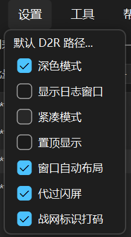

D2R-DK 食用指南
国服多开器 · 已支持批量多开
文档 v1.4.0 · 对应 D2R-DK_v0.1.2_build2608041344
这是什么
D2R-DK 是启动多个《暗黑破坏神 II：重制版》客户端账号的工具，也就是多开器。每号独立画质 / 窗口 / 位置。当前主线国服。
用 Token 直启，可单开，也可勾选多个账号一键批量多开。
主密码无法找回，遗忘不可恢复。第三方辅助软件，风险自负。勿删 .json .lock.json .ini *.bak，否则丢号。
功能
| 功能 | 说明 |
|---|---|
| Token 多开 | 国服直启，单独或批量，可调启动间隔 |
| 解压即用 | 设一次 D2R.exe 路径，不开战网。游戏更新时自行更新 |
| 每号独立 | Token / 设置 / Mod 分开，多开不串 |
| 自定义窗口 | 标题任意填，多窗一眼分清 |
| Mod 下拉选 | 自动识别 Mods，每号独立。支持 -txt / -locale enUS / -assettestmode 1 |
| 窗口布局 | 9 套布局槽，保存位置，启动自动摆窗 |
| 紧凑 / 托盘 | 紧凑模式 + 缩小到托盘，不占任务栏 |
| 加密 | AES-256，导出/导入需另设密码 |
| TZ / DC 监控 | 独立小窗看恐怖地带和黑毛，可置顶 |
教程
Token 是战网登录后地址栏 ST=CN-… 票据，不是密码。
添加账号
1. 设主密码，点 + 新建
首次运行设主密码解锁 → 点 + 新建。

2. 获取 → 登录战网
TOKEN 行点获取，自动开浏览器进国服战网登录页。

没弹出？点「复制战网链接」手动贴到 Chrome / Edge / Firefox。
登录第二个号时若浏览器打不开战网链接（显示「无法访问此页面」），通常是 IE 隐私模式问题导致读取了上次登录信息。可尝试：① 手动打开一个隐私/无痕窗口，点「复制战网链接」粘贴到地址栏登录；② 换一个与首次登录不同的浏览器。
3. 网易 ≠ 战网
网易 + 大神验证码 ≠ 战网账号 + 密码。取 Token 须战网登录。
- 底部「无法登录？」→ 网易验证 → 找回战网账号密码。
- 用战网邮箱/手机 + 战网密码登录。

4. 复制 ST 粘贴
登录跳转后，复制地址栏完整 ST 回到 DK 粘贴。

5. 填写保存
贴 ST；填备注作窗口标题；浏览选 D2R.exe；选 Mod；按需勾 -txt / -locale enUS / -assettestmode 1。点 Save。

6. 选设置
回主界面选中号 → 游戏设置下拉选 Settings.json → 保存。

7. 启动
单开：高亮账号 → 勾窗口模式（可选）→ ▶ 启动。
批量：勾选 2 个及以上账号 → ▶ 启动（启动间隔仅批量生效）。

紧凑模式
设置 → 紧凑模式，收起右栏只留账号列表。


启动参数
| 参数 | 作用 |
|---|---|
-txt | Mod 用，多数建议勾 |
-locale enUS | 语音英文 |
-assettestmode 1 | 反和谐 |
-w | 窗口模式 |
每号游戏设置
多开共用一份设置会互相覆盖。DK 每号单独存，启动前自动注入。
C:\Users\<用户名>\Saved Games\Diablo II Resurrected (CN)\Settings.json
- 选中号启动进游戏，调画面声音。
- 完全退出该 D2R。
- 回 DK 点「用当前设置更新此号」。
成功后不再显示 · 缺 settings。改设置后关齐所有 D2R → 更新此号。
Mod
<D2R目录>\mods\Mod名\Mod名.mpq
文件夹名与 .mpq 名须一致，区分大小写。设对路径后点刷新下拉选。
批量多开
自 build 2608041344 起已实装。勾选 2 个及以上账号后点 ▶ 启动即可批量多开（原版与 Mod 均可）。
- 原版 / 带 CG 的 Mod：程序代按 Space 跳过 CG，再代过闪屏。
- 跳 CG 的 Mod：直接代过闪屏。
批量启动时，若尚未勾选「代过闪屏」，程序会自动开启代过闪屏（状态栏提示一次），以便按间隔继续下一号；单开不改此项。
启动间隔仅在批量时生效，控制过完闪屏后到下一号的等待秒数。某号闪退时用右键 → 启动单独重拉该号，不会整批重开。
备份与换机
文件 → 导出配置 → 新电脑 文件 → 导入配置。可复制整个文件夹备份，同一目录不要同时运行两个 D2R-DK。
导出时选两种模式：
- 仅导出设置：不带登录状态，文件小。换机后需重新粘贴 Token。
- 完整迁移：在加密包内携带账号登录状态，导入后可直接启动。须设独立导出包密码（至少 12 位，包含字母和数字，不能与 DK.exe 主密码相同；建议再加符号）。
导出项：账号基础信息固定导出；启动设置、窗口布局、每账号游戏设置、TZ/DC 监控窗偏好、墨水屏推送设置可按需勾选。


完整迁移导出包 = 加密备份所选账号登录状态。请分开保存导出包和导出包密码；不要和导出包一起发给网友或上传未加密网盘。文件或导出包密码泄露，按战网账号安全流程处理并重新获取 Token。
窗口布局
工具 → 窗口布局，可将当前各游戏窗口的位置保存到 9 个槽位中。保存后勾选「显示」可预览布局；点击「加载」快速恢复已保存的排列。
设置 → 勾选「窗口自动布局」，下次启动游戏时将自动按最近一次保存的布局摆放窗口。

TZ / DC 监控
工具 → TZ / DC 监控。独立窗可置顶，不影响多开。

| 设置 | 墨水屏推送（可选） |
| 置顶 | 窗始终在前 |
| 暂停/继续 | 停 60s 自动刷新 |
| 刷新 | 立即拉取 |
- TZ：现（蓝）= 当前，下（橙）= 下个半时。每 30 分更新。
- DC：术士君临/毁灭之王。国/美/欧/亚，SC-L / HC-L / SC-N / HC-N。显示方式可选 阶段数值或6段彩色条形。
缩写 含义 SC Softcore 普通模式 HC Hardcore 专家模式 L Ladder 天梯 N Non-Ladder 非天梯
配置文件
| 文件 | 内容 | 可改？ |
|---|---|---|
D2R-DK.json | 账号 / Token / 布局 / 开关 | 否（加密） |
D2R-DK.lock.json | 程序锁 | 否 |
D2R-DK.ini | 窗口 / 主题 / 紧凑等 | 可（明文） |
*.bak | 备份 | 勿删 |
常见问题
| 问题 | 处理 |
|---|---|
| 没有 Token | 按教程重取 ST |
| Token 无效 | 过期或不全。重取 |
| 浏览器秒关 | 换最新版。异常则复制链接手动登 |
| 浏览器打不开 | 复制战网链接贴到 Chrome / Edge |
| 最小化找不到 | 看系统托盘 |
| Mod 扫不到 | 查 mods\名\名.mpq 路径 + 大小写 |
| 某号闪退 | 右键该号 → 启动 |
| 批量少开 | · 待设置 = 补 Token/路径，· 缺 settings = 先单开归档 |
| 原版能批量？ | 能。原版/有 CG 的 Mod 走 Space 跳 CG 再过闪屏；跳 CG 的 Mod 更快 |
| 窗口乱了 | 勿切窗，开布局 + 存布局槽 |
| 画质串号 | 关齐 D2R → 选中号 → 更新 |
| 无法连接服务器 | 串号、Token过期（用找回密码重置）、该号不支持Token登录等 |
| 忘主密码 | 无法找回。删 json + lock 重建（Token 重取） |